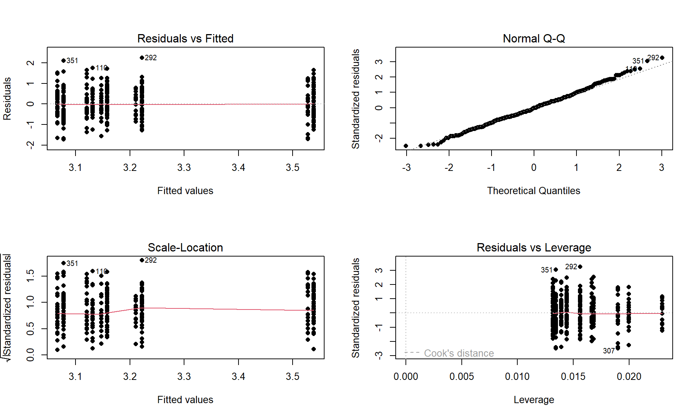
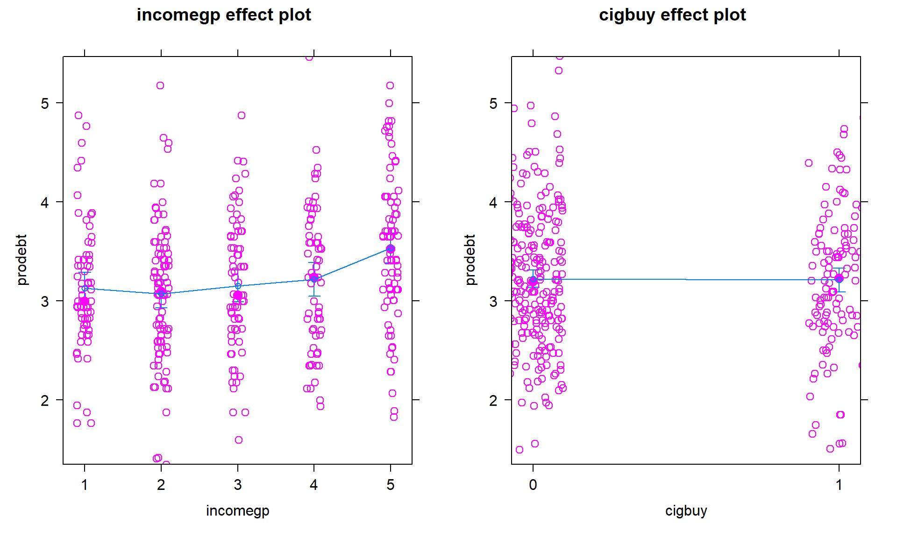
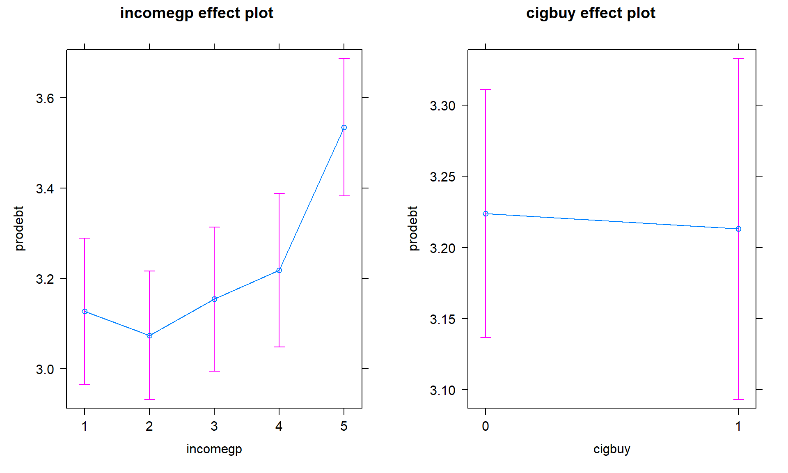

- Cover
- Acknowledgments
- 1 Preface
- 2 (R)e-Introduction to statistics
- 2.1 Data wrangling and density curves
- 2.2 Pirate-plots
- 2.3 Models, hypotheses, and permutations for the two sample mean situation
- 2.4 Permutation testing for the two sample mean situation
- 2.5 Hypothesis testing (general)
- 2.6 Connecting randomization (nonparametric) and parametric tests
- 2.7 Second example of permutation tests
- 2.8 Reproducibility Crisis: Moving beyond p < 0.05, publication bias, and multiple testing issues
- 2.9 Confidence intervals and bootstrapping
- 2.10 Bootstrap confidence intervals for difference in GPAs
- 2.11 Chapter summary
- 2.12 Summary of important R code
- 2.13 Practice problems
- 3 One-Way ANOVA
- 3.1 Situation
- 3.2 Linear model for One-Way ANOVA (cell means and reference-coding)
- 3.3 One-Way ANOVA Sums of Squares, Mean Squares, and F-test
- 3.4 ANOVA model diagnostics including QQ-plots
- 3.5 Guinea pig tooth growth One-Way ANOVA example
- 3.6 Multiple (pair-wise) comparisons using Tukey’s HSD and the compact letter display
- 3.7 Pair-wise comparisons for the Overtake data
- 3.8 Chapter summary
- 3.9 Summary of important R code
- 3.10 Practice problems
- 4 Two-Way ANOVA
- 4.1 Situation
- 4.2 Designing a two-way experiment and visualizing results
- 4.3 Two-Way ANOVA models and hypothesis tests
- 4.4 Guinea pig tooth growth analysis with Two-Way ANOVA
- 4.5 Observational study example: The Psychology of Debt
- 4.6 Pushing Two-Way ANOVA to the limit: Un-replicated designs and Estimability
- 4.7 Chapter summary
- 4.8 Summary of important R code
- 4.9 Practice problems
- 5 Chi-square tests
- 5.1 Situation, contingency tables, and tableplots
- 5.2 Homogeneity test hypotheses
- 5.3 Independence test hypotheses
- 5.4 Models for R by C tables
- 5.5 Permutation tests for the \(X^2\) statistic
- 5.6 Chi-square distribution for the \(X^2\) statistic
- 5.7 Examining residuals for the source of differences
- 5.8 General protocol for \(X^2\) tests
- 5.9 Political party and voting results: Complete analysis
- 5.10 Is cheating and lying related in students?
- 5.11 Analyzing a stratified random sample of California schools
- 5.12 Chapter summary
- 5.13 Summary of important R code
- 5.14 Practice problems
- 6 Correlation and Simple Linear Regression
- 6.1 Relationships between two quantitative variables
- 6.2 Estimating the correlation coefficient
- 6.3 Relationships between variables by groups
- 6.4 Inference for the correlation coefficient
- 6.5 Are tree diameters related to tree heights?
- 6.6 Describing relationships with a regression model
- 6.7 Least Squares Estimation
- 6.8 Measuring the strength of regressions: R2
- 6.9 Outliers: leverage and influence
- 6.10 Residual diagnostics – setting the stage for inference
- 6.11 Old Faithful discharge and waiting times
- 6.12 Chapter summary
- 6.13 Summary of important R code
- 6.14 Practice problems
- 7 Simple linear regression inference
- 7.1 Model
- 7.2 Confidence interval and hypothesis tests for the slope and intercept
- 7.3 Bozeman temperature trend
- 7.4 Randomization-based inferences for the slope coefficient
- 7.5 Transformations part I: Linearizing relationships
- 7.6 Transformations part II: Impacts on SLR interpretations: log(y), log(x), & both log(y) & log(x)
- 7.7 Confidence interval for the mean and prediction intervals for a new observation
- 7.8 Chapter summary
- 7.9 Summary of important R code
- 7.10 Practice problems
- 8 Multiple linear regression
- 8.1 Going from SLR to MLR
- 8.2 Validity conditions in MLR
- 8.3 Interpretation of MLR terms
- 8.4 Comparing multiple regression models
- 8.5 General recommendations for MLR interpretations and VIFs
- 8.6 MLR inference: Parameter inferences using the t-distribution
- 8.7 Overall F-test in multiple linear regression
- 8.8 Case study: First year college GPA and SATs
- 8.9 Different intercepts for different groups: MLR with indicator variables
- 8.10 Additive MLR with more than two groups: Headache example
- 8.11 Different slopes and different intercepts
- 8.12 F-tests for MLR models with quantitative and categorical variables and interactions
- 8.13 AICs for model selection
- 8.14 Case study: Forced expiratory volume model selection using AICs
- 8.15 Chapter summary
- 8.16 Summary of important R code
- 8.17 Practice problems
- 9 Case studies
- 9.1 Overview of material covered
- 9.2 The impact of simulated chronic nitrogen deposition on the biomass and N2-fixation activity of two boreal feather moss–cyanobacteria associations
- 9.3 Ants learn to rely on more informative attributes during decision-making
- 9.4 Multi-variate models are essential for understanding vertebrate diversification in deep time
- 9.5 What do didgeridoos really do about sleepiness?
- 9.6 General summary
- References
4.5 Observational study example: The Psychology of Debt
In this section, the analysis of a survey of \(N = 464\) randomly sampled
adults will be analyzed from a survey conducted by Lea, Webley, and Walker (1995)
and available in the debt data set from the faraway package
(Faraway 2022).
The subjects responded to a variety of questions
including whether they buy cigarettes (cigbuy: 0 if
no, 1 if yes), their housing situation (house: 1 = rent, 2 = mortgage,
and 3 = owned outright), their income group (incomegp: 1 =
lowest, 5 = highest), and their score on a continuous scale of attitudes about
debt (prodebt: 1 = least favorable, 6 = most favorable). The variable prodebt
was derived as the average of a series of questions about debt with each
question measured on an ordinal 1 to 6 scale, with higher values
corresponding to more positive responses about \(\underline{\text{going into debt}}\)
of various kinds. The ordered scale on surveys that try to elicit your opinions on
topics with scales from 1 to 5, 1 to 6, 1 to 7 or even, sometimes, 1 to 10 is called
a Likert scale (Likert 1932). It is not a quantitative scale and really
should be handled more carefully than taking an average of a set responses as was done here. That
said, it is extremely common practice in social science research to treat ordinal
responses as if they are quantitative and take the average of many of them to
create a more continuous response variable like the one we are using here. If
you continue your statistics explorations, you will see some better techniques
for analyzing ordinal responses. That said, the scale of the
response is relatively easy to understand as an amount of willingness to go
into debt on a scale from 1 to 6 with higher values corresponding to more
willingness to be in debt.
These data are typical of survey data where respondents were not required
to answer all questions and there are some
missing responses. We could clean out any individuals that failed to respond to
all questions (called “complete cases”) using the drop_na function, which will return responses only for subjects
that responded to every question in
the data set, debt. The change in sample size is available by running the dim function on the two data sets – there were \(464\) observations (rows) initially along with \(13\) variables (columns) and once observations with any missing values were dropped there are \(N = 304\) for us to analyze. Losing 35% of the observations is a pretty noticeable loss.
library(faraway)
data(debt)
library(tibble)
debt <- as_tibble(debt) %>% mutate(incomegp = factor(incomegp),
cigbuy = factor(cigbuy)
)
debtc <- debt %>% drop_na()
dim(debt)## [1] 464 13## [1] 304 13Using drop_na() with a list a variable names, we can focus on the three variables we are using in this model and whether the responses are missing on them, only cleaning out rows that are missing on incomegp, cigbuy, and/or prodebt92. The missingness is less dramatic, retaining \(N = 388\) observations in debtRc for our analysis using these three variables.
# Remove rows with missing values based on just three variables.
debtRc <- debt %>% drop_na(incomegp, cigbuy, prodebt)
dim(debtRc)## [1] 388 13The second approach seems better as it drops fewer observations so we will use that below. But suppose that people did not want to
provide their income levels if they were in the lowest or highest
income groups and that is why they are missing. Then we would be missing responses systematically and conclusions
could be biased because of ignoring particular types of subjects. We don’t have particular statistical tools to easily handle this problem but every researcher should worry about non-response when selected subjects do not respond at
all or fail to answer some questions. When the missing values are systematic in some fashion and not just missing randomly (missing randomly might be thought of as caused by “demonic intrusion” (Hurlbert 1984) that can’t be easily explained or related to the types of responses), then we worry about non-response bias that is systematically biasing our results because of the missing responses. This also ties back into our discussion of who was sampled. We need to
think carefully about who was part of the sample but refused to participate and
how that might impact our inferences. And whether we can even address the research question of interest based on what was measured given those that refused/failed to respond. For example, suppose we are studying river flows and are interested in the height of a river. Missingness in these responses could arise because a battery fails or the data logger “crashes” (not related to the responses and so not definitely problematic) or because of something about the measurements to be taken that causes the missingness (suppose the gage can only can measure between one and three feet deep and the river is running at four feet deep during a flood or below 1 foot during a drought). The first machine failures are very different from the height-based missing responses; the height-based missingness clearly leads to bias in estimating mean river height because of what can not be observed. In Chapter 5, we introduce the tableplot as another tool to visualize data that can also show missing data patterns to help you think about these sorts of issues further93. If you delete observations and the missing data are not random/non-systematic, your scope of inference is restricted to just those subjects that provided responses and were analyzed. If the missingness is random and not related to aspects of the measurements taken, then some missingness can be tolerated and still retain some comfort that inferences can be extended to the population a random sample of subjects was taken from.
Ignoring this potential for bias in the
results for the moment, we are first interested in whether buying
cigarettes/not and income groups interact in their explanation of the
respondent’s mean opinions on being in debt. The interaction plot
(Figure 4.15) may suggest an interaction between cigbuy
and incomegp where the lines cross, switching which of the cigbuy levels is higher (income levels 2, 3, and 5) or even almost not different (income levels 1 and 4). But it is
not as clear as the previous examples, especially with how large the SEs are relative the variation in the means. The interaction \(F\)-test helps us
objectively assess evidence against the null hypothesis of no interaction. Based on the plot, there do
not appear to be differences based on cigarette purchasing but there might be some
differences between the income groups if we drop the interaction from the model. If we drop the interaction, then
this suggests that we might be in Scenario 2 or 3 where a single main effect of
interest is present.
Figure 4.15: Interaction plot array of prodebt by income group (1 to 5) and whether they buy cigarettes (0 = no, 1 = yes).
As in other situations, and especially with observational studies where a single large sample is collected and then the levels of the factor variables are observed, it is important to check for balance – whether all the combinations of the two predictor variables are similarly represented. Even more critically, we need to check whether all the combinations of levels of factors are measured. If a combination is not measured, then we lose the ability to estimate the mean for that combination and the ability to test for an interaction. A solution to that problem would be to collapse the categories of one of the variables, changing the definitions of the levels but if you fail to obtain information for all combinations, you can’t work with the interaction model. In this situation, we barely have enough information to proceed (the smallest \(n_{jk}\) is 13 for income group 4 that buys cigarettes). We have a very unbalanced design with counts between 13 and 60 in the different combinations, so lose some resistance to violation of assumptions but can proceed to explore the model with a critical eye on how the diagnostic plots look.
## incomegp
## cigbuy 1 2 3 4 5
## 0 36 49 54 53 60
## 1 37 45 20 13 21The test for the interaction is always how we start our modeling in Two-Way ANOVA situations. The ANOVA table suggests that there is little evidence against the null hypothesis of no interaction between the income level and buying cigarettes on the opinions of the respondents towards debt (\(F(4,378) = 0.686\), p-value = 0.6022), so we would conclude that there is likely not an interaction present here and we can drop the interaction from the model. This suggests that the initial assessment that the interaction wasn’t too prominent was correct. We should move to the additive model here but first need to check the assumptions to make sure we can trust this initial test.
## Anova Table (Type II tests)
##
## Response: prodebt
## Sum Sq Df F value Pr(>F)
## incomegp 10.742 4 5.5246 0.0002482
## cigbuy 0.010 1 0.0201 0.8874246
## incomegp:cigbuy 1.333 4 0.6857 0.6022065
## Residuals 183.746 378
Figure 4.16: Diagnostic plot for prodebt by income group and buy cigarettes/not interaction model.
The diagnostic plots (Figure 4.16) seem to be pretty well-behaved with no apparent violations of the normality assumption and no clear evidence of a violation of the constant variance assumption. There is no indication of a problem with the independence assumption because there is no indication of structure to the measurements of the survey respondents that might create dependencies. In observational studies, violations of the independence assumption might come from repeated measures of the same person over time or multiple measurements within the same family/household or samples that are clustered geographically, none of which are part of the survey information we have. The random sampling from a population should allow inferences to a larger population except for that issue of removing partially missing responses so we can’t safely generalize results beyond the complete observations we are using without worry that the missing subjects are systematically different from those we are able to analyze. We also don’t have much information on the exact population sampled, so will just leave this vague here but know that there would be a population these conclusions apply since it was random sample (at least those that would answer the questions). All of this suggests proceeding to fitting and exploring the additive model is reasonable here. No causal inferences are possible because this is an observational study.
After ruling out the interaction of income and cigarette status on opinions about debt, we can focus on the additive model.
Hypotheses (Two sets apply when the additive model is the focus!):
\(H_0\): No difference in means for
prodebtfor income groups in population, given cigarette buying in model\(\Leftrightarrow\) All \(\tau_j\text{'s} = 0\) in additive model.
\(H_A\): Some difference in means for
prodebtfor income group in population, given cigarette buying in model\(\Leftrightarrow\) Not all \(\tau_j\text{'s} = 0\) in additive model.
\(H_0\): No difference in means for
prodebtfor cigarette buying/not in population, given income group in model\(\Leftrightarrow\) All \(\gamma_k\text{'s} = 0\) in additive model.
\(H_A\): Some difference in means for
prodebtfor cigarette buying/not in population, given income group in model\(\Leftrightarrow\) Not all \(\gamma_k\text{'s} = 0\) in additive model.
Validity conditions – discussed above but with new plots for the additive model:
Figure 4.17: Diagnostic plot of additive model for
prodebtby income group and whether they buy cigarettes/not.Constant Variance:
In the Residuals vs Fitted and the Scale-Location plots in Figure 4.17, the differences in variability among groups is minor and nothing suggests a violation. If you change models, you should always revisit the diagnostic plots to make sure you didn’t create problems that were not present in more complicated models.
We can also explore the partial residuals here as provided in Figure 4.18. The variability in the partial residuals appears to be similar across the different levels of each predictor, controlled for the other variable, and so does suggest any issues that were missed by just looking at the overall residuals versus fitted values in our regular diagnostic plots. Note how hard it is to see differences in the mean for levels of
cigbuyin this plot relative to the variability in the partial residuals but that the differences in the means inincomegpare at least somewhat obvious.
Figure 4.18: Term-plot for additive model for
prodebtby income group and whether they buy cigarettes/not with partial residuals.Normality of residuals:
- The QQ-Plot in Figure 4.17 does not suggest a problem with this assumption.
Calculate the test statistics and p-values for the two main effect tests.
## Anova Table (Type II tests) ## ## Response: prodebt ## Sum Sq Df F value Pr(>F) ## incomegp 10.742 4 5.5428 0.0002399 ## cigbuy 0.010 1 0.0201 0.8872394 ## Residuals 185.079 382- The test statistics are \(F(4,382) = 5.54\) and \(F(1,382) = 0.0201\) with p-values of 0.00024 and 0.887.
Conclusions (including for the initial work with the interaction test):
- There was initially little to no evidence against the null hypothesis of no interaction between income group and cigarette buying on pro-debt feelings (\(F(4,378) = 0.686\), p-value = \(0.6022\)) so we would conclude that there is likely not an interaction in the population and the interaction was dropped from the model. There is strong evidence against the null hypothesis of no difference in the mean pro-debt feelings in the population across the income groups, after adjusting for cigarette buying (\(F(4,382) = 5.54\), p-value = \(0.00024\)), so we would conclude that there is some difference in them. There is little evidence against the null hypothesis of no difference in the mean pro-debt feelings in the population based on cigarette buying/not, after adjusting for income group (\(F(1,382) = 0.0201\), p-value = \(0.887\)), so we would conclude that there is probably not a difference across cigarette buying/not and could consider dropping this term from the model.
So we learned that the additive model was more appropriate for these responses and that the results resemble Scenario 2 or 3 with only one main effect being important. In the additive model, the coefficients can be interpreted as shifts from the baseline after controlling for the other variable in the model.
Size:
- Figure 4.19 shows the increasing average comfort with being in
debt as the income groups go up except between groups 1 and 2 where 1 is a little
higher than two. Being a cigarette buyer was related to a lower comfort level
with debt but is really no different from those that did not report buying
cigarettes. It would be possible to consider follow-up tests akin to the Tukey’s
HSD comparisons for the levels of
incomegphere but that is a bit beyond the scope of this course – focus on the estimated mean for the 5th income group being over 3.5 and none of the others over 3.2. That seems like an interesting although modest difference in mean responses across income groups after controlling for cigarette purchasing or not.
Figure 4.19: Term-plots for the
prodebtresponse additive model with left panel for income group and the right panel for buying cigarettes or not (0 for no, 1 for yes).- Figure 4.19 shows the increasing average comfort with being in
debt as the income groups go up except between groups 1 and 2 where 1 is a little
higher than two. Being a cigarette buyer was related to a lower comfort level
with debt but is really no different from those that did not report buying
cigarettes. It would be possible to consider follow-up tests akin to the Tukey’s
HSD comparisons for the levels of
Scope of inference:
- Because the income group and cigarette purchasing were not (and really could not) be randomly assigned, causal inference is not possible here. The data set came from a random sample but from an unspecified population and then there were missing observations. At best we can make inferences to those in that population that would answer these questions and it would be nice to know more about the population to really understand who this actually applies to. There would certainly be concerns about non-response bias in doing inference to the entire population that these data were sampled from.
The estimated coefficients can also be interesting to interpret for the additive model. Here are the model summary coefficients:
## Estimate Std. Error t value Pr(>|t|)
## (Intercept) 3.13127172 0.09027437 34.6861672 4.283917e-120
## incomegp2 -0.05371924 0.10860898 -0.4946114 6.211588e-01
## incomegp3 0.02680595 0.11624894 0.2305909 8.177561e-01
## incomegp4 0.09072124 0.12059542 0.7522777 4.523474e-01
## incomegp5 0.40760033 0.11392712 3.5777288 3.911633e-04
## cigbuy1 -0.01088742 0.07672982 -0.1418929 8.872394e-01In the model, the baseline group is for non-cigarette buyers (cigbuy = 0)
and income group 1 with \(\widehat{\alpha} = 3.131\) points. Regardless of the
cigbuy level, the difference between income groups 2 and 1 is estimated
to be \(\widehat{\tau}_2 = -0.054\), an decrease in the mean score of 0.054 points.
The difference between income groups 3 and 1 is \(\widehat{\tau}_3 = 0.027\)
points, regardless of cigarette smoking status. The estimated difference
between cigarette buyers and non-buyers was estimated as
\(\widehat{\gamma}_2 = -0.011\) points for any income group, remember that this
variable had a large p-value in this model. The additive model-based estimates for all
six combinations can be found in Table 4.3.
| \(\color{red}{\text{Cig}}\) \(\color{red}{\text{Buy}}\) |
\(\color{blue}{\textbf{Income}}\) \(\color{blue}{\textbf{Group 1}}\) |
\(\color{blue}{\textbf{Income}}\) \(\color{blue}{\textbf{Group 2}}\) |
\(\color{blue}{\textbf{Income}}\) \(\color{blue}{\textbf{Group 3}}\) |
\(\color{blue}{\textbf{Income}}\) \(\color{blue}{\textbf{Group 4}}\) |
\(\color{blue}{\textbf{Income}}\) \(\color{blue}{\textbf{Group 5}}\) |
|---|---|---|---|---|---|
| \(\color{red}{\text{0:No}}\) | \(\widehat{\alpha} ={3.131}\) | \(\widehat{\alpha} +
\widehat{\tau}_2\) \(=3.131 - 0.016\) \(= 3.115\) |
\(\widehat{\alpha} +
\widehat{\tau}_3\) \(=3.131 + 0.027\) \(= 3.158\) |
\(\widehat{\alpha} +
\widehat{\tau}_4\) \(=3.131 + 0.091\) \(= 3.222\) |
\(\widehat{\alpha} +
\widehat{\tau}_5\) \(=3.131 + 0.408\) \(= 3.539\) |
| \(\color{red}{\text{1:}\text{Yes}}\) | \(\widehat{\alpha}+\widehat{\gamma}_2\) \(=3.131\) \(-0.011\) \(=3.142\) |
\(\widehat{\alpha}+\widehat{\tau}_2+\widehat{\gamma}_2\) \(=3.131 - 0.016\) \(- 0.011\) \(=3.104\) |
\(\widehat{\alpha}+\widehat{\tau}_3+\widehat{\gamma}_2\) \(=3.131 + 0.027\) \(- 0.011\) \(=3.147\) |
\(\widehat{\alpha}+\widehat{\tau}_4+\widehat{\gamma}_2\) \(=3.131 + 0.091\) \(- 0.011\) \(=3.211\) |
\(\widehat{\alpha}+\widehat{\tau}_5+\widehat{\gamma}_2\) \(=3.131 + 0.408\) \(- 0.011\) \(=3.528\) |
One final plot of the fitted values
from this additive model in Figure 4.20 hopefully crystallizes
the implications
of an additive model and reinforces that this model creates and assumes that
the differences across levels of one variable are the same regardless of the
level of the other variable and that this creates parallel lines. The
difference between cigbuy levels across all income groups is a drop in
-0.011 points. The income groups
have the same differences regardless of cigarette buying or not, with income
group 5 much higher than the other four groups. The minor differences in cigarette purchasing and large p-value for it controlled for income group suggest that we could also refine the model further and drop the cigbuy additive term and just focus on the income groups as a predictor – and this takes us right back to a One-Way ANOVA model so is not repeated here.

Figure 4.20: Illustration of the results from Table 4.3 showing the combined impacts of the components of the additive model for prodebt. Panel (a) uses income groups on the x-axis and different lines for cigarette buyers (1) or not (0). Panel (b) displays the different income groups as lines with the cigarette buying status on the x-axis.
In general, we proceed through the following steps in any 2-WAY ANOVA situation:
Make a pirate-plot and an interaction plot.
Fit the interaction model; examine the test for the interaction.
Check the residual diagnostic plots for the interaction model (especially normality and equal variance).
- If there is a problem with normality or equal variance, consider a “transformation” of the response as discussed in Chapter 7. This can help make the responses have similar variances or responses (and the model residuals) to be more normal, but sometimes not both.
If the interaction test has a small p-value, that is your main result. Focus on the term-plot and the interaction plot from (1) to fully understand the results, adding Tukey’s HSD results to
intplotto see which means of the combinations of levels are detected as being different. Discuss the sizes of differences and the pattern of the estimated interaction.If the interaction is not considered important, then re-fit the model without the interaction (additive model) and re-check the diagnostic plots. If the diagnostics are reasonable to proceed:
Focus on the results for each explanatory variable, using Type II tests especially if the design is not balanced. Possibly consider further model refinement to only retain one of the two variables (the one with the smaller p-value) if a p-value is large. Follow One-Way ANOVA recommendations from this point on.
Report the initial interaction test results and the results for the test for each variable from the model that is re-fit without the interaction.
Model coefficients in the additive model are interesting as they are shifts from baseline for each level of each variable, controlling for the other variable – interpret those differences if the number of levels is not too great.
Whether you end up favoring an additive or interaction model or do further model refinement, all steps of the hypothesis testing protocol should be engaged and a story based on the final results should be compiled, supported by the graphical displays such as the term-plots and interaction plots.
References
We can also use select to only retain these three variables and then
drop_na()to get the same result for these three variables.↩︎Correctly accounting for these missing data is a complex topic and you should not always engage
drop_na(), but the first step to handling missing data issues is to find out (1) if you have an issue, (2) how prevalent it is, and (3) whether it is systematic in any way – in other words (and to date myself), “knowing is half the battle” with missing data. Consult a statistician or take more advanced statistics courses to explore this challenging topic further.↩︎